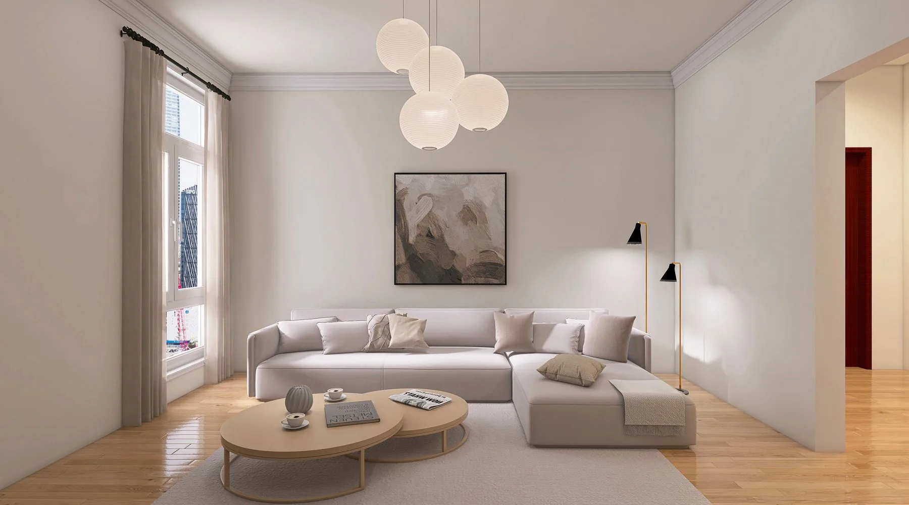
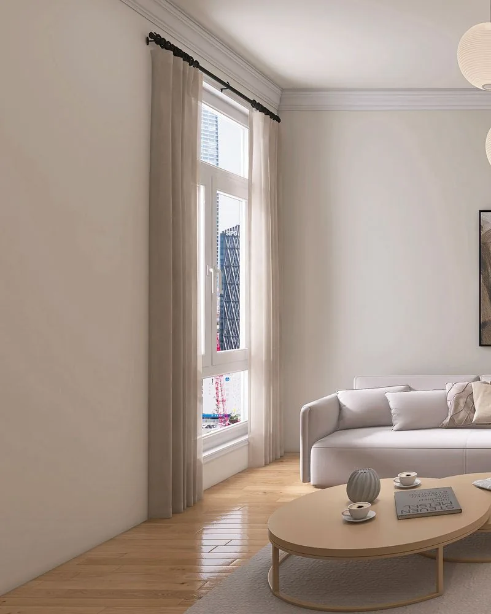
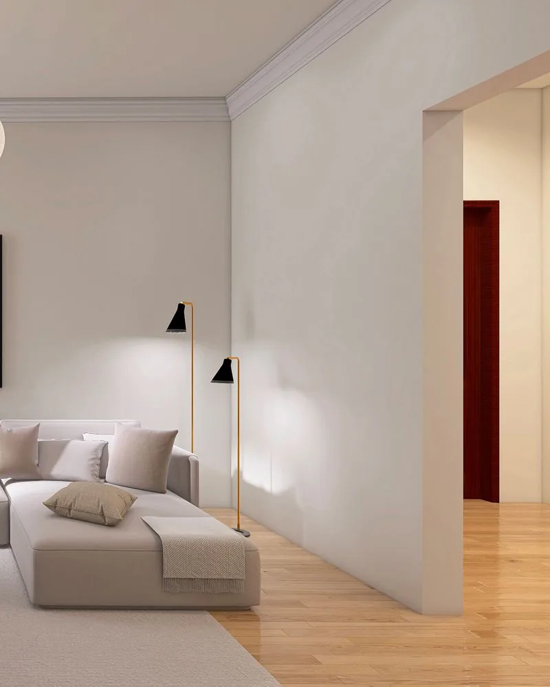

All work
Residential · Living · 2026
Oak & Light
A living room composed around a single shaft of afternoon light — oak, linen and lime-washed walls in quiet conversation.

A room built around light, texture and restraint.
The brief asked for calm: a room that could hold a long conversation, a stack of books and nothing louder than the light. The shell stays almost silent — lime-washed walls, a pale oak floor — so texture can do the talking.
A low linen sofa sits opposite a pair of sculptural armchairs. Brass appears only at the edges: a side table, the lip of a lamp. The result is warm without being heavy, and quiet without feeling empty.


Next project